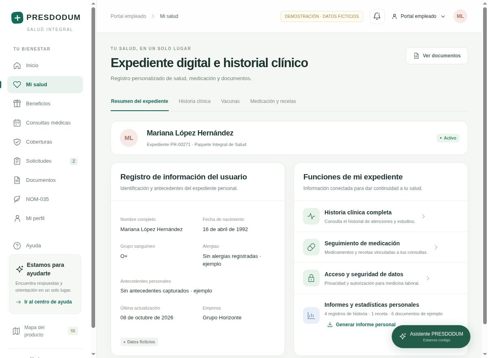

Conoce tu paquete
Consulta con tu empresa el acceso a PRESDODUM y descubre los beneficios disponibles para ti.
Asesorías médicas, prevención y protección.
Un paquete de salud que te acompaña, dentro
y fuera del trabajo.
10 asesorías en línea o por teléfono
TU PAQUETE INTEGRAL DE SALUD
Para una duda de hoy, un chequeo a tiempo
o un imprevisto. Conoce lo que tienes a tu alcance.
En línea o por teléfono, incluidas durante la vigencia de tu paquete.
Conoce cómo solicitarlasBeneficios sujetos a vigencia, condiciones del paquete y disponibilidad de la red.
TU SALUD, EN UN SOLO LUGAR
De tu primera consulta al seguimiento de una solicitud. Tu portal pone cada cosa en su lugar.
Explora el portalRecorrido de demostración con datos ficticios.

EL PRIMER PASO ES SENCILLO
Consulta con tu empresa el acceso a PRESDODUM y descubre los beneficios disponibles para ti.
Revisa una asesoría, tu estudio preventivo, los descuentos o las coberturas de tu paquete.
Solicita el apoyo que necesitas y consulta el avance, tus documentos y tu historial desde el portal.
PARA LAS EMPRESAS QUE CUIDAN
Acompaña a tu equipo con salud integral y un portal para organizar colaboradores, solicitudes, medicina laboral y documentación.
HABLEMOS CLARO
Lo esencial para empezar
con más claridad.
TU BIENESTAR MERECE UN LUGAR
Conoce lo que PRESDODUM puede poner a tu alcance.
Descubre la experiencia Explora la demo a tu ritmo.